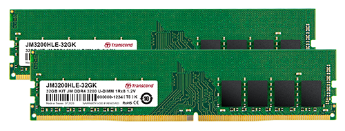
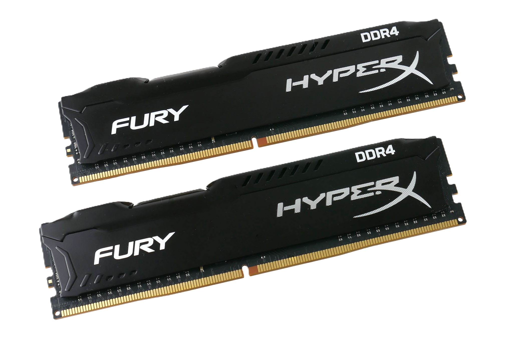

La memoria RAM (Random Access Memory) es un componente esencial en cualquier dispositivo informático, ya que actúa como el espacio de trabajo donde el procesador almacena temporalmente los datos y programas en ejecución. A diferencia del almacenamiento en disco, la RAM permite un acceso mucho más rápido a la información, lo que mejora significativamente el rendimiento del sistema. La cantidad y velocidad de la RAM determinan en gran medida la capacidad de un ordenador para manejar múltiples tareas simultáneamente. Si un sistema no tiene suficiente RAM, recurrirá a la memoria virtual del disco duro o SSD, lo que ralentiza notablemente su rendimiento. Es por ello que una mayor cantidad de memoria RAM suele traducirse en una experiencia informática más fluida y eficiente.
Existen diferentes tipos de memoria RAM, siendo los más comunes en la actualidad DDR (Double Data Rate), con varias generaciones como DDR3, DDR4 y DDR5. Cada nueva versión mejora la velocidad de transferencia de datos, reduce el consumo energético y optimiza la latencia. Por ejemplo, la memoria DDR4, que ha sido ampliamente utilizada en los últimos años, ofrece mayores frecuencias y menor voltaje que la DDR3, mientras que DDR5, la más reciente, duplica el ancho de banda y mejora la eficiencia. Sin embargo, la compatibilidad entre estas generaciones no es retroactiva, lo que significa que una placa base diseñada para DDR4 no podrá usar módulos DDR5 y viceversa. Por ello, al actualizar la RAM, es fundamental asegurarse de que sea compatible con el hardware existente.
La memoria RAM también se clasifica según su tecnología, como SRAM (Static RAM) y DRAM (Dynamic RAM). La SRAM es más rápida y consume menos energía, pero es más costosa y se usa principalmente en cachés de procesadores. En cambio, la DRAM, que es la más común en los módulos de RAM de los ordenadores, necesita ser constantemente refrescada para mantener los datos almacenados. Otra variante importante es la memoria ECC (Error-Correcting Code), utilizada en servidores y estaciones de trabajo, que tiene la capacidad de detectar y corregir errores de memoria, aumentando la estabilidad y confiabilidad del sistema. Este tipo de memoria es crucial en entornos donde la integridad de los datos es prioritaria, como en bancos, centros de datos y aplicaciones científicas.
 El rendimiento de la RAM no solo depende de su capacidad en gigabytes, sino también de su frecuencia y latencia. La frecuencia, medida en megahercios (MHz), indica la velocidad a la que puede transferir datos, mientras que la latencia representa el tiempo de respuesta de los módulos de memoria. Un equilibrio adecuado entre estos dos factores es clave para optimizar el rendimiento del sistema. Además, las configuraciones en doble canal (dual-channel) o cuádruple canal (quad-channel) permiten aumentar el ancho de banda de la memoria, mejorando la comunicación entre la RAM y el procesador. Para los jugadores y creadores de contenido, elegir una memoria con buena velocidad y baja latencia puede marcar una gran diferencia en la fluidez del sistema y la velocidad de procesamiento.
A la hora de elegir memoria RAM, es importante considerar no solo la cantidad y velocidad, sino también la marca y calidad de los módulos. Fabricantes como Corsair, Kingston, G.Skill y Crucial son reconocidos por ofrecer productos de alta calidad y confiabilidad. También es recomendable verificar si la RAM tiene disipadores de calor, especialmente en configuraciones de alto rendimiento y overclocking, ya que una mejor disipación térmica contribuye a la estabilidad del sistema. Además, herramientas como CPU-Z y AIDA64 pueden ayudar a monitorear el estado y rendimiento de la memoria RAM instalada. Con una buena elección y mantenimiento, la RAM puede mejorar significativamente la experiencia de uso en cualquier ordenador, desde tareas básicas hasta aplicaciones exigentes como edición de vídeo y juegos en alta resolución.